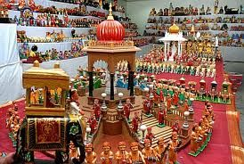
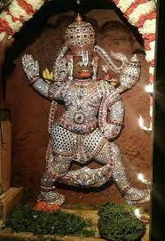
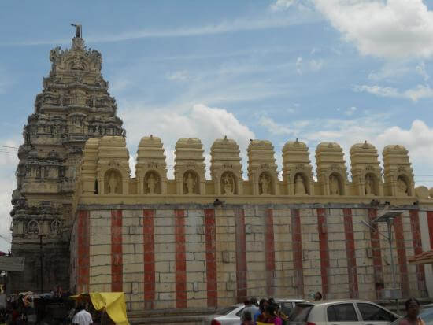

Channapatna Toys
Channapatna toys are a particular form of wooden toys and dolls that are manufactured in the town of Channapatna ( 12.87 Sq.K.M) in the Ramanagara district of Karnataka state,
India. This traditional craft is protected as a geographical indication (GI) under the World Trade Organization, administered by the Government of Karnataka. As a result of the
popularity of these toys, Channapatna is known as Gombegala Ooru (toy-town) of Karnataka. Traditionally, the work involved lacquering the wood of the Wrightia tinctoria tree,
colloquially called Aale mara (ivory-wood).
History
Lacquered toys find mentioned in vachanas of Basavanna during 11th-12th century CE in Karnataka. Although the use of Lac (lacquer resin) for wood finish, cosmetics, toys,bangles and dye is much earlier in ancient India. This natural Lac resin was once imported in sizeable quantity into Europe from India. Under various local rulers like Hoysalas,
Vijayanagara and Mysore Kingdom it received patronage from royals and commoners alike. Bavas Miyan helped renew channapatana toys during it's decline, he adopted Japanese
technology for toys making and helped the local artisans improve their art. For nearly two centuries, ivory-wood was the main wood used in the making of these toys, though
rosewood and sandalwood were also occasionally used.
Manufacturing
The craft has diversified over time; in addition to the traditional ivory-wood, other woods—including rubber, sycamore, cedar, pine and teak—are now used as well. Manufacturingstages include procuring the wood, seasoning the wood, cutting the wood into the desired shapes, pruning and carving the toys, applying the colours and finally polishing the finished
product. Vegetable dyes are used in the colouring process to ensure that the toys and dolls are safe for use by children. As of Oct 2011, has population of 71,902, in which 254 are in
home manufacturing units and 50 in small factories, were engaged in the making of these toys. The Karnataka Handicrafts Development Corporation (KHDC) provides assistance with
marketing efforts. The oldest and most popular manufacturing unit Bharath Art and crafts help develop innovative products. 
Gowdagere,Channapatna
World's tallest Chamundeshwari idol with 18 hands
The 60-feet Goddess Chamundeshwari statue with 18 hands is a must-see spot in Karnataka. The statue made out of five metal alloys is said to be the world's tallest statue dedicated toChamundeshwari. The interesting thing to note is that the statue is made by Muslim experts in metal casting.
Not just Mysuru's Chamundi temple, now, even Ramanagar's Chamundi temple will be a favorite tourist spot as the world Tallest statue was unveiled."The team of 20 members headed by
Muzzamil Khan was involved in making this gigantic Panchaloha statue and it took three years to complete the project. Villagers from Gowdanagere and surrounding areas of Channapatna
and Ramanagara District contributed with old metals. From copper tumbler to bronze pot, old boilers, broken metal lamps, and unused items including aluminum were given.
Where is this temple located?
The two-decade-old temple is located at Malluru Hobli, Gowdagere village of Channapatna in Ramanagara District.Click Here to see Location
The pictures:

Sri Chamundeshwari Basavappanavara Temples is famous not only in Karnataka but also all over India. ‘Chamundi’ or ‘Durga’ is the fierce form of ‘Shakti’. She is the slayer of
demons, ‘Chanda’ and ‘Munda’ and also ‘Mahishasura’, the buffalow-headed monster. " She is the tutelary deity of the Mysuru Maharajas and the presiding deity of Mysuru. For
several centuries they have held the Goddess, Chamundeswari, in great reverence. " Chamunda (Sanskrit: चामुण्डा, IAST: Cāmuṇḍā) also known as Sachchi Mata, Chamundi ,
Chamundeshwari or Charchika, She is considered as Divine Mother in Hinduism. "
Kanva Reservoir:
places etc....,Near this there is a Hill called kootgal hill,which is nice place for photos.You can see kootgal hill photos which i have uploaded.And there is historical place called
Krishnagiri hills also there near Makali.
Kanva Dam was built in 1946 across the Kanva River for irrigation. It is 15 kilometres (9.3 mi) long and covers 776 hectares (1,920 acres). Kanva Reservoir is an artificial lake and
tourist attraction 69 kilometres (43 mi) from Bangalore, India, formed by the damming of the Kanva River in an irrigation project.
There is a fisheries training and research center near the dam, which was established to train the local residents in fish farming so that they could become economically independent.
The reservoir is surrounded by wooded hills and offers good birdwatching.The cave temple of Purushotthama Thirtha Gavi 3 kilometres (1.9 mi) away is a pilgrimage center for
Madhwa Brahmins. A statue of Hanuman has been placed inside the cave.
Click here to see Location
The pictures and Location of Kanva Reservoir:
.jpg)
.jpg)
Kootgal Hill (Thimmappana Betta):
Thimmappana betta in Ramanagara, Bangalore is one of the least explored hill top in Bangalore. There's a temple of "Thimmappa" at the base of the hill and hence the name
"Thimmappa Swamy Betta". Its also known as 'Kootagal' Hill
Click Here to see Location
The pictures of Kootgal Hill:

Brundhavan Temple,Abbur(Channapatna):
As it is said never judge a thing with its size, so is the case with Abbur. It is a small village in Karnataka that comes under Mysore district.It is situated on the banks of the River
Kanwa.
The village is famous for its divine spirituality. People visiting this place will find a newly born peace of mind. The place is a home to Saints of Vaishnava prophets and Mula-Brindavan
of Sri Brahmanya. It is believed that Sri Brahmanya Thirtha, a great saint meditated for a long period of time inside a cave in Abbur. Before leaving for Brindavana, he passed the legacy
to Sri Vysaraja and pronounced him as the head of the mutt. There are many idols that are worshipped here like Sita, Ramchandra, Lakshmidevi etc. The mutt is now termed as
Kundapura Mutt.
Click here to see location
The pictures of Brundhavan Temple
Ramadevara Betta(Ramanagara)
One of the most sought after places to visit in Ramanagara is the Ramadevara Betta Hill that is located away from the concrete jungles of Bangalore. The hill is snuggled
3,000 feet above the ground and offers fantastic views of bountiful nature.Something that makes this spot popular is that the Bollywood blockbuster “Sholay” was shot here
and the surroundings of the hills are just beyond one’s imagination. If you are planning for a soulful escape then this is the best choice for you.
Location: Shri Pattabhi Rama Temple Sri Rama Hill, Thibbe Gowdana Doddi, Ramanagara, Karnataka 562159
Timings: 9:00 am to 5:00 pm
Price: None
Click here to see Location
The pictures of Ramdevara betta
Kengal Hanumantaraya Temple
Bangalore- mysore highway 10 km from ramanagara, this temple was built during the period of karanataka’s 2nd chief minister, sri kengal Hanumanthaiah who is also the chief
architect behind of vidhana soudha, the legislature building in Bangalore. This temple older then 60 years. Pilgrimages are most visitors of this temple, every Saturday more number
of traditional tourists will visit. Basic facilities are available at kengal.This temple is open on all days between 7 AM to 7 PM. Tourists from all over the city pour in here to get the
blessings of Lord Hanuman also known as Anjaneya (The son of Anjana). Special poojas are conducted on every Saturdays.
Click Here to see Location
The pictures of Anjaneya Temple,Kengal:
Ambegalu Krishna Temple Mallur(Channapatna)
Dodda Mallur is a village in Channapatna Taluk in Ramanagara district in the Indian state of Karnataka. Mallur is located on the banks of the river Kanva. The village is famous
for its temples of Sri Ramaprameya Swamy, Aravindavalli and Ambegalu Navaneeta Krishna (crawling Krishna) This temple was built by the Great Chola dynasty, South Indian
Tamil rulers maybe in the 12th century. It is approximately 60 km from Bangalore in Bangalore-Mysore state highway. It is roughly 3 km from Channapatna.
The idol of Ambegalu
Navaneetha Krishna (crawling Krishna with butter in hand), is believed to be the only deity of Lord Sri Krishna in this pose. This idol was installed by Vyasaraja (aka Vyasatirtha),
who was a prominent saint of Dvaita Vedanta. The famous Kriti (musical composition or song) "Jagadodharana Adisidale Yashode" was composed by most prominent composer of
Carnatic music Purandaradasa in appreciation of the beauty of this idol.
Dodda Mallur is located between Bangalore and Mysore.
Its 60 km from Bangalore and approximately 80 km from Mysore. It is 3 km from Channapatna. Transport: You can reach Channapatna by Bus and Train. From Channapatna, local
autorickshaws and private vehicles transport travelers to Doddamallur.
Events:
The Brahmotsavam of Sri Ramaprameya Swamy happens to fall in the months of April/May of every year. The architecture of this temple is built in such a way that for this part of the
year the sunrays at sunrise fall directly on the sanctum sanctorum (Garbhagudi of Sri Aprameya Swamy).
Click Here to see Location
The pictures of Temple:
Janapada Loka, Ramanagara
Janapada Loka, located in Ramanagara District, is a fantastic museum that displays the beautiful folk art from the different regions of Karnataka. This has become quite popular
among tourists as it offers an excellent opportunity to observe the myriad folk art of Karnataka and as well as internalize the Heritage and Culture of the state.The main campus
of Janapada Loka is magnificently decorated with tribal art symbols and design that represent the folk tradition of the beautiful state of Karnataka. The main entrance of this brilliant
Museum is guarded by an artistic gate that features two pillars on either side with Nandidhwajas. The gate is adorned with brass trumpets along with the face of Lord Shiva and
Vishnu embossed on the leaves of the gate. The Loka Mahal is a two-storey building found next to the main campus which exhibits dolls of Statues of folk dances who traditionally
perform the different styles of folk dance in Karnataka. A wide range of Chau Masks which are used in the typical tribal dance of Eastern India can also be found in this wing of
Janapada Loka.
Chitra kuteera is another part of this Museum where founder, H. L. Nage Gowda’s pictures can be found. It mainly displays photographs of his interaction work
and association with tribal people and different tribes. These photographs show the journey of the museum’s founder to different folk communities to collect information about their
art and culture. He was not only dedicated to his job but had an immense passion for the folk art of Karnataka. The Janapada library has a huge collection of books that demonstrate
the folk culture of Karnataka. Shalmala is an open space which features in ancient stone statues and sculptures which have been brought in from different areas of the state. The
Ayagaramala is also another open yard that displays different ancient machines and utensils like a bullock cart, wooden chariot, pottery equipment and machines used for crushing
sugarcane. A lifelike sculpture of a working man can also be found here along with other everyday items which were used in ancient Karnataka. Several festivals and celebrations
are held in this museum to spread awareness about the folk culture of the state.